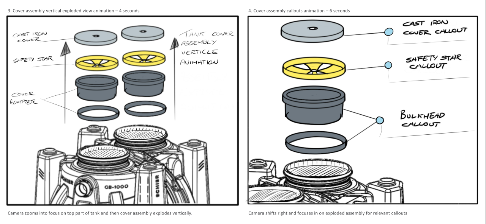

Utilising product animation to make complex concepts easy to understand at a glance.
Schier Products hired Laut Design for a comprehensive design project that encompassed all aspects of their brand, products, and identity. As part of this initiative, I was responsible for creating animations of their GB-1000 grease interceptor to effectively communicate product details to their customers.
www.schierproducts.com
Full site with featured animation